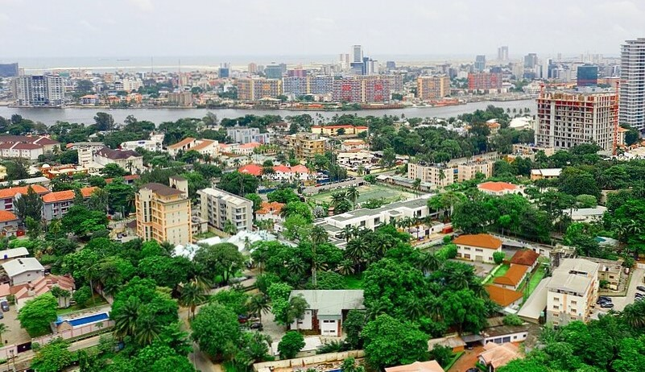

There’s something magnetic about Lagos. It’s not just the city’s size or speed—it’s the soul. Lagos is alive in a way that few places are. It’s chaotic and beautiful, gritty and glamorous, all at once. And for me, it’s home. From the bustling markets of Balogun to the sleek towers of Victoria Island, Lagos is a city of contrasts. It’s where tradition dances with innovation, where every street corner hums with ambition. You don’t just visit Lagos—you feel it
Nestled by the lagoon, Ikoyi is Lagos’ quiet luxury. It’s green, serene, and effortlessly elegant. Where the rest of the city races, Ikoyi strolls. Ikoyi is elegance. It’s where colonial charm meets modern luxury. Tree-lined streets, serene parks, and waterfront views make it feel like a world apart. It’s the kind of place where you can sip coffee on a balcony and hear birds instead of car horns.
But Ikoyi isn’t just peaceful—it’s powerful. It’s home to embassies, billion-naira businesses, and some of the most influential minds in Nigeria. It’s where deals are made, ideas are born, and futures are shaped. For me, Ikoyi is more than a neighborhood. It’s a feeling. It’s the place I go to recharge, reflect, and remember why I love this city so much.
Lagos is my favorite city because it’s real. It’s raw. It’s relentless. And in the middle of all that madness, Ikoyi reminds me that beauty and calm can thrive too. If you’ve never been to Lagos, come with an open heart and a curious mind. You’ll leave changed.